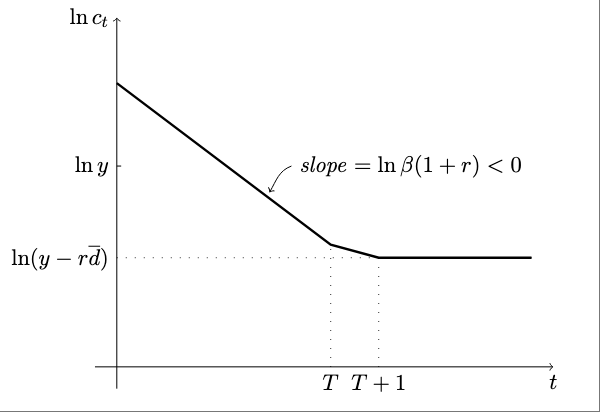
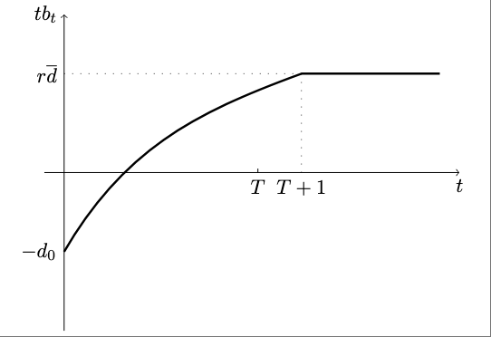
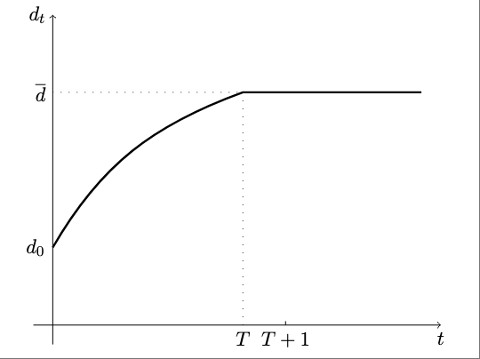

Exercise 12.3
Collateral Constraints and Impatient Consumers
Problem
The starting point of this exercise is the endowment economy with impatient households studied in exercise 2.11 of Chapter 2. Modify that environment by assuming that households are subject to a borrowing limit of the form
\[ d_t \le \bar{d}, \]
Consider two alternative scenarios: one in which this borrowing constraint is not binding in period 0 and one in which it is. Under both scenarios characterize the equilibrium paths of consumption, net external debt, and the trade balance.
Answer
\[ \max_{\{c_t, d_t\}} \quad \sum_{t=0}^{\infty} \beta^t \ln c_t \]
subject to
\[ c_t + (1+r) d_{t-1} = y +d_t \]
and
\[ d_t \le \bar{d} \]
given \(d_{-1} = 0\).
An eqm are sequences \(\{c_t, d_t, \mu_t\}_{t=0}^{t=\infty}\) satisfying for all \(t\ge 0\)
\[ \frac{c_{t+1}}{c_t} =\frac{\beta (1+r)}{1-\mu_t} \tag{1} \]
\[ \mu_t (\bar{d}-d_t) =0; \quad \mu_t\ge 0;\quad d_t\le\bar{d} \tag{2} \]
\[ c_t + (1+r) d_{t-1} = y +d_t, \tag{3} \]
given \(d_{-1} =0\). The variable \(\mu_t\) is the Lagrange multiplier associated with the collateral constraint.
Recall that \(\beta(1+r) <1\) and that \(\bar{d}\) is less than the natural debt limit.
Scenario 1: The collateral constraint is binding in period 0, that is, \(d_0 = \bar{d}\). By (3), \(c_0 = y+\bar{d}\). And \(tb_0 = y-c_0 = -\bar{d} <0\). We are going to guess an eqm and then verify that all eqm conditions are satisfied. Guess that for \(t\ge1\), \(c_t = y - r\bar{d}\), \(d_t = \bar{d}\), and \(1-\mu_t = \beta(1+r)\). It follows that all eqm conditions are satisfied for \(t\ge1\). What about period \(t=0\). It remains to show that \(\mu_0\ge 0\). By (1), \(c_1/c_0 =\frac{\beta (1+r)}{1-\mu_0}\), substitute the proposed values for \(c_0\) and \(c_1\) to obtain \(y-r\bar{d}/(y+\bar{d})=\frac{\beta (1+r)}{1-\mu_0}\). This implies that \(\mu_0\ge 0\) only if \(\beta (1+r) \frac{y+\bar{d}}{y-r\bar{d}} \le 1\). For example, this would hold if \(\bar{d}=0\). And it would not hold for \(\bar{d}\) close to the natural debt limit. Thus, there do exist positive values of \(\bar{d}\) (and less than the ndl) such that \(\mu_0\ge0\) and the collateral constraint binds in period 0. Let us turn to Scenario 2 now, namely, the case that in period 0 the collateral constraint is slack.
Scenario 2: The collateral constraint is slack in period 0, that is, \(d_0 < \bar{d}\). Note that an equilibrium in which the collateral constraint is never binding does not exist. As we have shown in EX2.11, when the constraint never binds, then \(d_t\) converges to the natural debt limit, which contradict the assumption that the CC never binds. Let \(T\ge 1\) be the period in which the collateral constraint binds for the first time, that is, \(\mu_T\ge0\), \(d_T =\bar{d}\) and \(d_t<\bar{d}\) for all \(t<T\). Assume further that the collateral constraint then binds forever, that is, \(d_t = \bar{d}\) for all \(t\ge T\). We wish to show that such an equilibrium exists. Let’s first characterize the eqm for all \(t>T\): \(d_t=\bar{d}\), \(c_t = y-r\bar{d}>0\), and by (1) \(\mu_t >0\). Therefore all eqm conditions are satisfied for \(t>T\). Now consider period \(t=T\). By definition of \(T\), \(d_{T-1}<\bar{d}\) and \(d_T = \bar{d}\). Evaluating (3) at \(t=T\) and at \(t=T+1\), it follows that \(c_{T+1}<c_T\).
Now consider \(t<T\). By definition of \(T\), the collateral constraint is slack, so that \(\mu_t=0\) for all \(t<T\). For \(t=0\) to \(t=T-1\), we have and \(c_{t+1} = \beta (1+r) c_t\). (This means that \(c_t\) is decreasing until period \(t=T+1\) from then on it is constant. So we have characterized \(c_t\) but for an explicit solution for \(c_0\) and an explicit expression for \(T\)) Replace \(c_t\) by (3) to obtain the following system of \(T\) equation in the following \(T\) unknowns: \(d_0, d_1, \dots, d_{T-1}\)
\[ \begin{eqnarray*} y+d_1 -(1+r) d0 &= &\beta (1+r) (y + d_0 - (1+r) d_{-1})\\ y+d_2 -(1+r) d1 &= &\beta (1+r) (y + d_1 - (1+r) d_0)\\ \vdots\\ y+d_T-(1+r) d_{T-1}&=& \beta(1+r) (y + d_{T-1} - (1+r) d_{T-2})\\ \end{eqnarray*} \]
Do we know whether \(d_t\) is increasing over time, that is, \(d_{t} > d_{t-1}\)? We are starting with \(d_0<\bar{d}\) by the assumption of scenario 2. We have already established that eventually \(d_t\) must go up and hit \(\bar{d}\). Suppose it were to fall and then at some point it must go up so at some point it must be true that \(d_t \ge d_{t+1}<d_{t+2}\). This implies that \(y+d_{t+2}- (1+r) d_{t+1} > y+d_{t+1}-(1+r) d_t\), or \(c_{t+1}>c_t\). So this can never be the case. We have therefore established that for all \(t<T\), \(d_t>d_{t-1}\). It then follows that debt is monotonically increasing until period \(T\) and constant thereafter, that is, \(d_t = \bar{d}\) for all \(t\ge T\).
What about the dynamics of \(c_t\)? Consumption is falling for all \(t \le T+1\) and constant thereafter. Because consumption is declining the trade balance is increasing. Starting in \(T+1\) the trade balance is constant and equal to \(TB_t = r \bar{d} >0\) for all \(t>T\). Also because in the long-run \(c_t<y\), we know that \(c_0\) must be greater than \(y\), that is, we know that \(d_0>0\).
For scenario 2, below are graph of the dynamics of \(c_t\), \(tb_t\), and \(d_t\)


